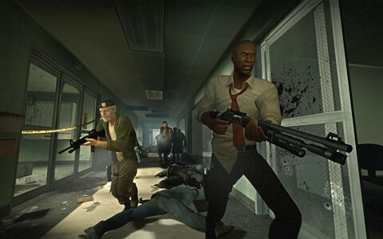
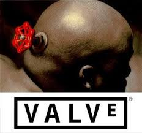

Left 4 Dead es un videojuego de terror de disparos en primera persona desarrollado por Valve South y publicado por Valve. El juego utiliza el motor gráfico de Valve, Source, y está disponible para Microsoft Windows, Xbox 360 y macOS. Fue lanzado originalmente para Microsoft Windows y Xbox 360 en noviembre de 2008 y para Mac OS X en octubre de 2010, y es el primer título de la serie Left 4 Dead.
Ambientado tras un brote de zombis en la costa este de Estados Unidos, el juego enfrenta a sus cuatro protagonistas, apodados los "Supervivientes", contra hordas de infectados.
Left 4 Dead fue desarrollado por Valve Corporation, una de las compañías más influyentes en la industria de los videojuegos. Valve es conocida por su trabajo en varios títulos icónicos, como Half-Life, Portal y Counter-Strike.
